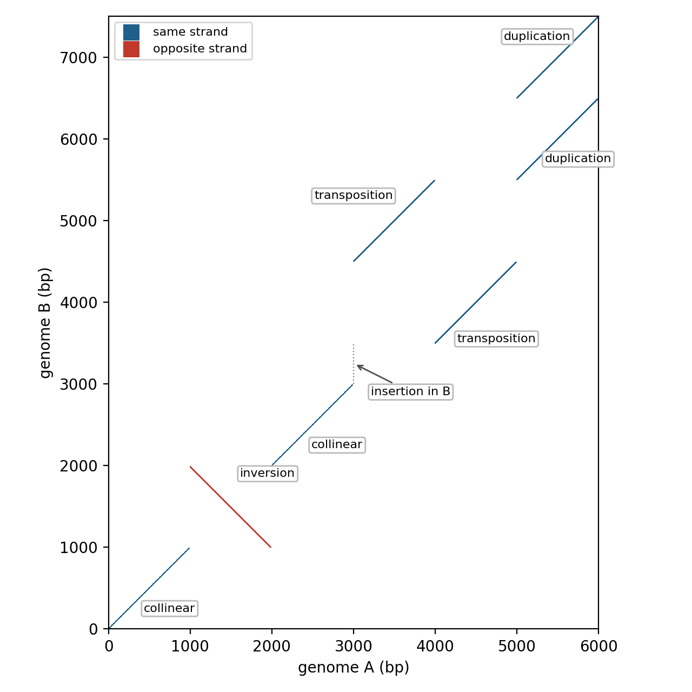
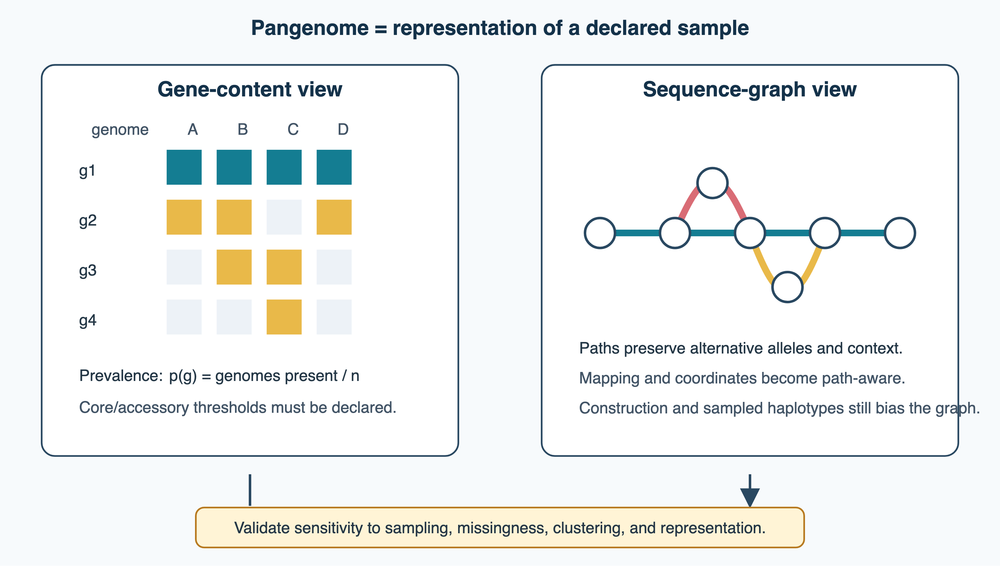

6 Genomes
Fundamental differences in how different genomes are constructed. What is the difference between eukaryotic and prokaryotic genomes?
6.1 Overview
This chapter summarises what thirty years of genome sequencing have taught us about genomes: how large they are, how they are organised, how they vary within species, and what the non-coding majority of a eukaryotic genome does. The methods for obtaining genome sequences are covered in Chapter 5, and the evolutionary processes that shape genomes, such as duplication, horizontal transfer and selection, in Chapter 3. The analysis of gene expression (Chapter 7) builds on the regulatory elements introduced here.
- background: nucleic acids, the central dogma, cells and model organisms (Section 6.2);
- the genome projects, what a gene is, why the human gene count fell and how assemblies differ from annotations, genome size and gene number, and the C-value paradox (Section 6.3);
- the organisation of prokaryotic and eukaryotic genomes, genome duplications, organelle genomes and viral genomes (Section 6.4);
- gene order, synteny, dot plots and genome rearrangements (Section 6.5);
- genomes in populations: bacterial pangenomes, from one reference genome to a pangenome graph, population-genetic explanations of genome complexity, and what ancient genomes have revealed about human evolution (Section 6.6);
- repeats, transposable elements, segmental duplications, the mechanisms that create structural variants, and the 3D organisation of the genome (Section 6.7);
- pseudogenes, the birth of new genes (including de novo from non-coding DNA), and small proteins missed by classical annotation (Section 6.8);
- non-coding RNAs, regulatory elements and the debate about how much of the genome is functional (Section 6.9).
6.2 Background: genes, genomes and cells
Bioinformatics at DBB is part of a PhD in biochemistry, and examiners expect you to know the molecules and cells that the methods describe. This section summarises the background on nucleic acids and genes at the level of an undergraduate course in molecular biology. The corresponding background on proteins is given in Section 9.2.
6.2.1 Nucleic acids
DNA is a polymer of nucleotides, each consisting of a deoxyribose sugar, a phosphate and one of four bases: the purines adenine (A) and guanine (G), and the pyrimidines cytosine (C) and thymine (T). Two antiparallel strands form the double helix, held together by base pairing, A with T (two hydrogen bonds) and G with C (three), and by stacking between the bases. Because the strands are complementary, each can serve as a template for the other, which is the basis of replication and of almost every experimental method in molecular biology: hybridisation, PCR and sequencing (Section 5.2). RNA differs by having a ribose sugar and uracil (U) instead of thymine. It is usually single-stranded but folds into secondary and tertiary structures through base pairing within the same molecule (Section 1.8), which allows it to act as a catalyst as well as a carrier of information (Section 3.2).
6.2.2 The central dogma and its exceptions
Francis Crick’s central dogma describes the flow of sequence information in cells: DNA is replicated, transcribed into RNA, and messenger RNA is translated into protein. In eukaryotes, the primary transcript is processed before export from the nucleus: a 5’ cap is added, introns are removed by splicing (Section 6.4), and a poly(A) tail is added at the 3’ end. Translation by the ribosome reads the mRNA in triplets, using the genetic code, in which 61 codons specify the 20 amino acids and three are stop signals. The code is nearly universal, with small variations, for example in mitochondria. Because most amino acids are encoded by several codons, substitutions can be synonymous or non-synonymous, the basis of the dN/dS test for selection (Section 3.4).
The dogma has exceptions and extensions. Reverse transcription copies RNA into DNA, in retroviruses and retrotransposons (Section 6.7). Many genes produce functional RNAs that are never translated (Section 6.9). Gene expression is regulated at every step: by transcription factors binding to promoters and enhancers, by chromatin, by RNA processing and stability, by microRNAs, and by the regulation of translation and protein degradation. This is why mRNA levels predict protein levels only partly (Section 7.5).
6.2.3 Cells and organisms
All cellular life belongs to three domains, Bacteria, Archaea and Eukarya (Section 4.5). Prokaryotic cells (bacteria and archaea) have no nucleus, and transcription and translation are coupled in the cytoplasm. Eukaryotic cells have a nucleus, an endomembrane system (endoplasmic reticulum, Golgi apparatus, lysosomes) and organelles: mitochondria, and in plants and algae chloroplasts, which descend from bacterial endosymbionts (Section 6.4). Proteins are sorted to these compartments by signals in their sequence (Section 10.5).
Much of what is known comes from a few model organisms, chosen because they are easy to grow and manipulate genetically: the bacterium Escherichia coli, the yeasts Saccharomyces cerevisiae and Schizosaccharomyces pombe, the nematode Caenorhabditis elegans, the fruit fly Drosophila melanogaster, the plant Arabidopsis thaliana, the zebrafish and the mouse. Their genomes were among the first sequenced (Section 6.3), and knowledge about their genes is transferred to other species by homology (Section 10.4).
6.2.4 Experimental methods
You should also understand, in outline, the experimental methods that produce the data you analyse: PCR and DNA sequencing (Section 5.2), microarrays and RNA-seq (Chapter 7), mass spectrometry (Chapter 8), X-ray crystallography, NMR and cryo-EM (Section 9.3), and the methods for detecting protein interactions (Section 11.2). The errors and biases of the data follow from how they were generated. The genome projects (Section 6.3) turned this knowledge of single genes and cells into catalogues of whole genomes.
See also: further explanation in Section D.6.1; related Wikipedia articles in Section E.6.1.
Parts of this section are adapted from the Wikipedia articles DNA, Central dogma of molecular biology, Genetic code and Model organism (CC BY-SA 4.0, retrieved 4 October 2026). For more detail, see Alberts et al. (2002) (free on the NCBI Bookshelf) or Clark et al. (2018) (OpenStax, free).
6.3 From the first genome projects
The first complete genomes, in the 1990s, turned genomics from the study of single genes into the comparison of whole gene repertoires. This section follows the main genome projects, asks what a gene is and how many there are, and summarises how genomes differ in size and gene content. The technologies and algorithms behind the projects are described in Chapter 5.
6.3.1 The genome projects
The first DNA genome, that of the bacteriophage φX174 (5386 bases), was sequenced in 1977 (Sanger et al. 1977), and the human mitochondrial genome (16 569 bases) followed in 1981 (Anderson et al. 1981). Sequencing a cellular genome seemed out of reach until the 1990s (Table 6.1).
| Year | Genome | Size | Genes | Notes |
|---|---|---|---|---|
| 1995 | Haemophilus influenzae | 1.8 Mb | ~1700 | first free-living organism; whole-genome shotgun (Fleischmann et al. 1995) |
| 1995 | Mycoplasma genitalium | 0.58 Mb | ~470 | one of the smallest genomes of a cell that can be grown in culture; the “minimal gene set” (Fraser et al. 1995) |
| 1996 | Saccharomyces cerevisiae | 12 Mb | ~6000 | first eukaryote; international consortium (Goffeau et al. 1996) |
| 1997 | Escherichia coli K-12 | 4.6 Mb | ~4300 | the model bacterium (Blattner et al. 1997) |
| 1998 | Caenorhabditis elegans | 97 Mb | ~19 000 | first animal (The C. elegans Sequencing Consortium 1998) |
| 2000 | Drosophila melanogaster | 120 Mb* | ~13 600 | whole-genome shotgun of a large genome (Adams et al. 2000; Myers et al. 2000) |
| 2000 | Arabidopsis thaliana | 125 Mb | ~25 500 | first plant (The Arabidopsis Genome Initiative 2000) |
| 2001 | Homo sapiens (drafts) | 2.9 Gb | ~30 000–40 000 predicted | public and Celera drafts (International Human Genome Sequencing Consortium et al. 2001; Venter et al. 2001) |
| 2002 | Mus musculus | 2.5 Gb | ~30 000 predicted | first comparison of two mammals (Mouse Genome Sequencing Consortium 2002) |
| 2004 | Homo sapiens (finished) | 2.85 Gb* | 20 000–25 000 | finished euchromatin (International Human Genome Sequencing Consortium 2004) |
| 2022 | Homo sapiens (T2T) | 3.06 Gb | ~19 000–20 000 | first complete human genome (Nurk et al. 2022) |
The Human Genome Project was launched in 1990 as an international public project, with an estimated cost of three billion dollars. It used a hierarchical (clone-by-clone) strategy: the genome was first cut into large bacterial artificial chromosome (BAC) clones, which were mapped to the chromosomes and then sequenced individually by shotgun. In 1998 the company Celera Genomics, led by Craig Venter, announced that it would sequence the genome faster with a whole-genome shotgun strategy (Weber and Myers 1997), relying on the assembly algorithms developed by Gene Myers (Section 5.3). The resulting race ended with the joint announcement of two draft sequences in 2000 and their publication in 2001 (International Human Genome Sequencing Consortium et al. 2001; Venter et al. 2001). One lasting legacy of the public project is the Bermuda principles of 1996. They required sequence data to be released within 24 hours, and set the norm of open data in genomics (Chapter 2).
What counts as a finished genome has changed. The “finished” human sequence of 2004 covered about 99% of the euchromatin, with about one error per 100 000 bases, but it still had 341 gaps and left out the heterochromatin (International Human Genome Sequencing Consortium 2004). The reference assembly GRCh38 (2013) remained incomplete in the same places. About 8% of the genome consists of long, nearly identical repeats that could not be assembled from BAC clones or short reads: the centromeres, the short arms of the acrocentric chromosomes with the ribosomal RNA gene arrays, and large segmental duplications (Section 6.7). Accurate long reads combined with ultra-long nanopore reads made it possible to assemble them. In 2022 the Telomere-to-Telomere (T2T) consortium published CHM13, the first gapless sequence of all human autosomes and the X chromosome (Nurk et al. 2022; Altemose et al. 2022); a complete Y chromosome followed in 2023 (Rhie et al. 2023) (Section 5.3). A finished genome now means a gapless sequence of every chromosome from telomere to telomere, ideally with both haplotypes resolved.
The early genomes produced several surprises. About a third of the genes in every new bacterial genome had no known function (citation needed), and even E. coli and yeast, the best-studied organisms, had hundreds of uncharacterised genes. The human genome contained far fewer genes than expected, about as many as the nematode C. elegans (Section 6.3.2). And the mouse genome showed that about 5% of the human genome is conserved between the two species, much more than the 1–2% that codes for protein (Mouse Genome Sequencing Consortium 2002). This was the first evolutionary estimate of how much of the genome is functional (Section 6.9).
6.3.2 What is a gene?
Counting genes requires a definition of a gene, and the definition has changed several times (Gerstein et al. 2007). For Mendel and the early geneticists, a gene was an abstract unit of inheritance, detected through a phenotype and placed on a linkage map. The one gene, one enzyme idea of the 1940s and the discovery of DNA turned it into a molecular object: a stretch of DNA that encodes one polypeptide. This molecular gene was soon complicated by split genes and alternative splicing (Section 6.4), by genes that overlap or lie inside the introns of other genes, by distant regulatory elements (Section 6.9), and by genes whose final product is an RNA rather than a protein.
The ENCODE pilot project of 2007 added another complication. Much of the genome is transcribed, transcripts often extend beyond the annotated genes or join exons of neighbouring genes, and many transcribed regions overlap no known gene. In response, Gerstein and colleagues proposed that a gene is “a union of genomic sequences encoding a coherent set of potentially overlapping functional products” (Gerstein et al. 2007). The unit is the product (a protein or a functional RNA), and the gene is the set of sequences that contribute to related products. In practice, annotations such as GENCODE are built from transcript models, and genes are clusters of transcripts that share exons on the same strand.
The count of human protein-coding genes has fallen as the evidence has improved (Pertea and Salzberg 2010). Before the genome was sequenced, estimates were often around 100 000, and some based on expressed sequence tags were even higher. They rested on the expectation that a more complex organism needs more genes. The drafts of 2001 predicted 30 000–40 000, the finished genome 20 000–25 000 (International Human Genome Sequencing Consortium 2004), and the count has drifted down to about 19 000–20 000 since (as of 2026, depending on the annotation). The reduction came from removing models that do not encode proteins: ORFs that are not conserved and have no protein-like features (Clamp et al. 2007), fragments of pseudogenes, and models without support from protein evidence or evolutionary constraint (Ezkurdia et al. 2014). At the same time, the counts of non-coding genes and of transcripts per gene have grown.
Gene counts come from a genome annotation, which is a separate product from the genome assembly, with its own versions and its own errors. The assembly is the sequence itself, released in versions such as GRCh37, GRCh38 (with minor patch releases) and T2T-CHM13. Genomic coordinates refer to one assembly version and differ between versions. The annotation is the set of gene models placed on an assembly by pipelines that combine ab initio prediction, transcript and protein evidence, and manual curation (Section 5.4). Annotations of less-studied genomes are mostly automatic and contain more errors, such as split, fused, missing or spurious gene models, which propagate to the protein databases (Chapter 2). A result should therefore always state both the assembly and the annotation version.
For the human genome, GENCODE (the same gene set as Ensembl) and RefSeq annotate the same assembly independently and are updated several times a year. They agree on most protein-coding genes but not on all, and CHESS, built from thousands of RNA-seq experiments (Pertea et al. 2018), gives other numbers again (Amaral et al. 2023). The disagreements are concentrated in a few hundred to a few thousand loci: genes of uncertain coding status, which may be non-coding RNAs or pseudogenes (Abascal et al. 2018), readthrough transcripts that join two genes, and complex families in segmental duplications. Differences in how isoforms, exon boundaries and UTRs are defined are much larger. MANE Select defines one matching transcript per protein-coding gene in Ensembl and RefSeq (Morales et al. 2022), which makes clinical reporting consistent but does not settle which loci are genes. Small protein-coding genes are a separate blind spot, discussed in Section 6.8. Whether a locus is “a gene” is therefore partly a decision of the annotation, and a gene count is only meaningful with the catalogue and release it came from.
6.3.3 Genome size and gene number
The C-value is the amount of DNA in a haploid (gametic) nucleus. It varies more than 100 000-fold among cellular organisms:
- Bacteria and archaea have genomes from about 0.1 to 16 Mb. The smallest belong to endosymbionts of insects, such as Carsonella, with 160 kb and fewer than 200 genes (Nakabachi et al. 2006). They have lost most genes needed for independent life. The smallest free-living organisms, such as the abundant marine bacterium Pelagibacter, have streamlined genomes of about 1.3 Mb (Giovannoni et al. 2005). The largest bacterial genomes, in soil bacteria such as myxobacteria and streptomycetes, are 10–16 Mb.
- Eukaryotes range from about 2 Mb in some microsporidian parasites to more than 100 Gb. The current record is the fork fern Tmesipteris oblanceolata, with about 160 Gb, some 50 times the human genome (Fernández et al. 2024). Lungfish, salamanders and lilies also have very large genomes.
In prokaryotes, genomes are densely packed with genes, about one gene per kilobase, and gene number is proportional to genome size. Larger bacterial genomes encode more regulatory and metabolic genes, reflecting more versatile lifestyles. In eukaryotes the relationship breaks down. Yeast has about one gene every 2 kb, while in the human genome protein-coding exons make up only about 1.5% of the sequence.
Genome size and gene number should therefore be kept apart. Among eukaryotes, differences in genome size are mostly differences in repetitive DNA, above all transposable elements (Section 6.7), and in the length of introns and intergenic regions, not in the number of protein-coding genes. Polyploidy is a further, independent factor. A recent polyploid, such as bread wheat (about 16 Gb, with three subgenomes), carries several copies of each chromosome set. This multiplies the DNA content and the number of gene copies without adding new kinds of genes (Section 6.4). For polyploids, the C-value, which includes all chromosome sets of a gamete, is therefore distinguished from the monoploid genome size, the DNA content of a single chromosome set.
6.3.4 The C-value paradox
Genome size is not correlated with organismal complexity. An onion has about five times more DNA than a human, and closely related species of amphibians or plants can differ several-fold in genome size. C. A. Thomas called this the C-value paradox in 1971 (Thomas 1971). The paradox was resolved, in part, by the discovery that most eukaryotic DNA does not code for proteins: differences in genome size are mostly differences in non-coding DNA, especially transposable elements (Section 6.7). What remains unexplained is why different species carry such different amounts of non-coding DNA, which Gregory called the C-value enigma (Gregory 2001). Genome size correlates with cell size, nucleus size and the rate of cell division. It changes over time through a balance between gains, mainly by transposable elements and duplications, and losses by deletion (Kapusta et al. 2017). Population-genetic arguments for why non-coding DNA accumulates in some lineages are discussed in Section 6.6.
The number of protein-coding genes does not track complexity either, an observation sometimes called the G-value paradox. Humans have about as many genes as nematodes and fewer than many plants. Organismal complexity is itself hard to define, and gene number is not a measure of it. The differences between, for example, humans and nematodes are thought to lie more in how genes are used: more elaborate regulation, alternative splicing (Section 6.4), combinations of protein domains (Section 3.6), and non-coding RNAs (Section 6.9). How the genes are arranged in different kinds of genomes is the subject of Section 6.4.
See also: further explanation in Section D.6.2; related Wikipedia articles in Section E.6.2.
Parts of this section are adapted from the Wikipedia articles Genome project, Human Genome Project, Genome size, C-value and Bermuda Principles (CC BY-SA 4.0, retrieved 3 October 2026).
6.4 Differences across the tree of life
The exam asks for the fundamental differences between prokaryotic and eukaryotic genomes. This section describes the organisation of each, the traces of whole-genome duplications, the genomes of mitochondria and chloroplasts, which are remnants of bacteria living inside eukaryotic cells, and the genomes of viruses.
6.4.1 Prokaryotic genome organisation
Most bacteria and archaea have a single circular chromosome, often together with smaller circular plasmids. There are exceptions: Vibrio cholerae has two chromosomes, and Borrelia and Streptomyces have linear ones. The genome is not enclosed in a nucleus but folded into a compact nucleoid. Prokaryotic genomes are organised by replication, transcription and selection for compactness (Rocha 2008):
- One origin of replication. Replication starts at a single origin (oriC) and proceeds in both directions to the terminus, dividing the chromosome into two halves, replichores. Some archaea, such as Sulfolobus, have several origins.
- GC skew. Because the leading and lagging strands are replicated differently, they accumulate different mutations: the leading strand becomes enriched in G over C. The GC skew, \((G-C)/(G+C)\) in a sliding window, therefore changes sign at the origin and the terminus, which is used to locate them in new genome sequences (Lobry 1996).
- Gene orientation and position. Genes, especially essential and highly expressed ones, tend to lie on the leading strand, so that the replication fork and RNA polymerase move in the same direction and do not collide head-on. Highly expressed genes, such as those for ribosomal proteins, cluster near the origin, where they are present in more copies in rapidly dividing cells.
- Operons. Functionally related genes are often transcribed together as one mRNA from a single promoter. The concept was introduced by François Jacob and Jacques Monod in 1961 with the lac operon (Jacob and Monod 1961). About half of bacterial genes are in operons (citation needed). Operons are rearranged over evolution, but genes that remain neighbours in many genomes are usually functionally linked (Section 6.5).
- Compactness. About 85–90% of the genome codes for proteins, intergenic regions are short (around 100 bp), and there are few pseudogenes. Spliceosomal introns are absent; the rare introns are self-splicing group I and group II introns and, in archaea, introns in tRNA and rRNA genes that are cut out by a dedicated enzyme. Prokaryotic genomes have a deletional bias: non-functional DNA is removed quickly.
- A mobile gene pool. Plasmids, prophages, transposons and genomic islands acquired by horizontal gene transfer make up a variable part of the genome (Section 6.6 and Section 3.7).
Archaea look like bacteria in this respect, with circular chromosomes, operons and compact genomes, but their machinery for replication, transcription and translation resembles that of eukaryotes, and some of them package DNA with histones.
6.4.2 Eukaryotic genome organisation
Eukaryotic nuclear genomes are organised very differently:
- Linear chromosomes in a nucleus. The genome is divided into several linear chromosomes (23 pairs in humans), packed with histones into chromatin (Section 6.7). Each chromosome is replicated from many origins.
- Telomeres. Linear chromosomes cannot be replicated to their very ends (the end-replication problem). They end in telomeres, tandem repeats of a short motif (TTAGGG in vertebrates) that are added by the enzyme telomerase, an RNA-containing reverse transcriptase discovered by Carol Greider and Elizabeth Blackburn (Greider and Blackburn 1985).
- Centromeres attach chromosomes to the spindle during cell division. They range from a 125 bp sequence in budding yeast to megabase arrays of satellite repeats in humans (Section 6.7).
- Introns and splicing. In 1977 two groups found that adenovirus mRNAs are assembled from separate segments of the genome (Berget et al. 1977; Chow et al. 1977). Most eukaryotic genes are split into exons and introns, which are removed from the pre-mRNA by the spliceosome. Intron density varies widely: budding yeast has only about 280 introns in total, while a typical human gene has about ten exons spread over tens of kilobases, and some genes, such as dystrophin, span more than 2 Mb. Whether introns were present in the earliest genes (introns early) or were inserted later (introns late) was long debated. Spliceosomal introns probably derive from self-splicing group II introns that entered with the mitochondrial endosymbiont.
- Alternative splicing. Exons can be combined in different ways, so one gene can produce several transcripts. RNA-seq showed that more than 90% of human multi-exon genes are alternatively spliced (Pan et al. 2008; Wang et al. 2008), although how many of these isoforms are functional is debated (Section 3.6).
- Large intergenic regions and distant regulation. Genes are separated by long stretches of non-coding DNA, much of it derived from transposable elements. Genes are regulated by promoters and by enhancers that can be far from the gene they control (Section 6.9), and transcription is influenced by chromatin and its 3D organisation (Section 6.7).
| Feature | Prokaryotes | Eukaryotes (e.g. human) |
|---|---|---|
| Chromosomes | usually one, circular, plus plasmids | several, linear, in a nucleus |
| Replication origins | one (bacteria); one to a few (archaea) | many per chromosome |
| Ends | none | telomeres and telomerase |
| Genome size | 0.1–16 Mb | 2 Mb–160 Gb |
| Coding fraction | 85–90% | 1–2% in humans (70% in yeast) |
| Introns | rare, no spliceosome | common, spliceosomal |
| Gene organisation | operons, polycistronic mRNA | one gene per mRNA, alternative splicing |
| Repeats and transposons | few | often the majority of the genome |
| Gene content | highly variable within species (pangenome) | relatively stable within species |
| Organelle genomes | none | mitochondria, plastids |
6.4.3 Genome duplications
Whole-genome duplications (WGDs) have left clear traces in many eukaryotic genomes. Their mechanisms, the fates of duplicated genes and the evidence for the main events are described in Section 3.5. At the level of genome organisation, a WGD is recognised as large blocks of duplicated genes in the same order (paralogous synteny), and, when two related species are compared, as a pattern in which each region of one genome corresponds to two regions of the other. The budding yeast genome has such a 2:1 relationship with genomes that did not undergo its WGD about 100 million years ago (Wolfe and Shields 1997; Kellis et al. 2004). Two rounds of WGD early in vertebrate evolution (2R) explain why many human gene families have four members where invertebrates have one (Dehal and Boore 2005). Teleost fish had a third round, and flowering plants are particularly rich in polyploidy: the small genome of Arabidopsis contains the remnants of several ancient duplications (The Arabidopsis Genome Initiative 2000). Most duplicated genes are lost within a few million years, and genomes return towards their previous size, so ancient WGDs can be detected only through the retained duplicates and the conserved gene order.
Recent polyploids and hybrids are among the hardest genomes to analyse. In an allopolyploid, formed by hybridisation between species, as in bread wheat (subgenomes A, B and D) and many other crops, the subgenomes are similar but not identical. In an autopolyploid, such as cultivated potato (four copies of one genome), the copies are nearly identical. Assemblers designed for haploid or diploid genomes tend to collapse similar subgenomes or switch between them, and short reads map ambiguously between them, so separating them requires long reads and phasing (Section 5.3). Orthology is harder too. A gene of a diploid relative corresponds to two or more homoeologues, the copies inherited from the different parental genomes, so one-to-one orthology breaks down, and gene trees of an allopolyploid reflect hybridisation, a reticulate event, rather than a simple bifurcating species tree (Section 3.5; Section 4.4). Hybrid fungal genomes, such as that of the lager yeast Saccharomyces pastorianus, raise the same problems. Most genomics methods and benchmarks were developed on diploid model organisms, and their performance on polyploid and hybrid genomes should not be taken for granted.
6.4.4 Organelle genomes and endosymbiosis
Mitochondria and chloroplasts have their own small genomes. The endosymbiotic theory, proposed for chloroplasts by Konstantin Mereschkowski in 1905 and developed by Lynn Margulis (then Sagan) in 1967 (Sagan 1967), explains them as the remnants of bacteria that were engulfed by an ancestral cell. Gene sequences confirmed the theory: mitochondria descend from alphaproteobacteria and plastids from cyanobacteria (Roger et al. 2017). The acquisition of the mitochondrion was probably part of the origin of eukaryotes themselves (Section 4.5).
- The human mitochondrial genome is a circle of 16 569 bp encoding 37 genes: 13 proteins of the respiratory chain, 22 tRNAs and 2 rRNAs (Anderson et al. 1981). It is very compact, has no introns, uses a slightly different genetic code (UGA codes for tryptophan) and is inherited from the mother. Its rapid evolution and lack of recombination made it an early marker of human population history (Section 6.6).
- Mitochondrial genomes vary greatly. The most bacteria-like, in the protist Reclinomonas americana, encodes 97 genes (Lang et al. 1997), while plant mitochondrial genomes are large (hundreds of kilobases to megabases) but mostly non-coding.
- Plastid genomes are typically 120–160 kb with 100–130 genes.
Organelle genomes encode only a small fraction of the proteins the organelles need. Human mitochondria contain more than 1000 proteins, almost all encoded in the nucleus, made in the cytoplasm and imported. Most of the genes of the original endosymbionts were lost or moved to the nucleus by endosymbiotic gene transfer (Timmis et al. 2004), and the transfer continues: fragments of mitochondrial DNA are still inserted in nuclear genomes (NUMTs). Why some genes remain in the organelle at all is still discussed; one explanation is that it allows each organelle to regulate the expression of the genes for its own respiratory or photosynthetic complexes. Endosymbiont genomes in general shrink: the bacterial endosymbionts of insects, which live inside host cells and are transmitted between generations, have some of the smallest genomes known (Nakabachi et al. 2006), a process driven by small population sizes and relaxed selection (Section 6.6).
6.5 Gene order, synteny and genome rearrangements
Genomes change not only by substitutions, duplications and losses but also by rearrangements that move, invert and join large segments. The order of genes along the chromosomes is therefore a character in its own right. It decays more slowly than sequence in some lineages and much faster in others, and it provides evidence of homology, orthology, genome duplication and function that is independent of sequence similarity.
6.5.1 Synteny and collinearity
The word synteny originally meant that two loci lie on the same chromosome. In comparative genomics it is mostly used for conserved correspondence between regions of two genomes, and collinearity for the stricter case in which the genes are also in the same order and orientation. Because usage varies, a claim should state whether it concerns the same chromosome, a block of conserved gene content, or a collinear block.
From a few dozen genetic markers, Nadeau and Taylor estimated in 1984 that the human and mouse genomes are made up of about 180 conserved segments, broken by rearrangements since the two lineages diverged (Nadeau and Taylor 1984). The mouse genome sequence confirmed the picture: more than 90% of both genomes can be divided into a few hundred corresponding blocks of conserved synteny (Mouse Genome Sequencing Consortium 2002). Rates differ greatly between lineages. Gene order in mammals and birds is relatively stable, whereas plant mitochondrial genomes rearrange so often that closely related species differ in gene order even though their sequences evolve slowly (Palmer and Herbon 1988). In bacteria, gene order beyond the operon is lost quickly, so that distantly related genomes retain little conserved order except for groups of functionally linked genes (Mushegian and Koonin 1996). Genes that remain neighbours across many bacterial genomes are therefore likely to work together, which is used to predict functional links (Section 10.4).
Conserved synteny is used in several ways:
- Orthology. Among several paralogues, the orthologue usually lies in the corresponding region of the other genome. Orthology databases use conserved gene order as independent support (Section 3.5).
- Missing genes. If a gene is absent from an otherwise conserved block, a search of the genome sequence in that region often finds a gene that the annotation missed, a pseudogene, or a gap in the assembly.
- Genome duplications. A whole-genome duplication leaves pairs of paralogous blocks, and each region of an unduplicated relative corresponds to two regions of the duplicated genome (Section 6.4).
- Ancestral genomes. Comparing many genomes makes it possible to reconstruct ancestral chromosomes. The amphioxus genome showed that chordate chromosomes descend from about 17 ancestral linkage groups (Putnam et al. 2008), and conserved synteny has been traced across animals as distant as sponges, cnidarians and bilaterians (Simakov et al. 2022). Patterns of synteny between amphioxus, lampreys and jawed vertebrates have also been used to time the two rounds of vertebrate genome duplication relative to the divergence of jawless and jawed vertebrates (Simakov et al. 2020).
6.5.2 Dot plots
The simplest way to compare the order of two sequences is the dot plot, introduced by Gibbs and McIntyre in 1970 (Gibbs and Mcintyre 1970). One sequence is placed along the horizontal axis and the other along the vertical axis, and a dot is drawn wherever the two are similar. With single residues the plot is dominated by random matches, so a dot is usually drawn only if a window of \(w\) residues contains at least \(t\) matches, or if its alignment score exceeds a threshold. A larger window or a stricter threshold removes noise but hides short or divergent similarities. Dotter displays the scores as a greyscale and lets the user change the threshold interactively (Sonnhammer and Durbin 1995). For whole genomes, the dots are matches found by a whole-genome aligner such as MUMmer (Kurtz et al. 2004), or pairs of orthologous genes.
Rearrangements have characteristic signatures (Figure 6.1):
- a collinear region gives a diagonal line with positive slope;
- an inversion gives a segment with the opposite slope, between two breakpoints, because the matching sequence is on the reverse strand. Both strands must therefore be compared for DNA;
- an insertion or deletion shifts the diagonal horizontally or vertically, leaving a gap;
- a transposition moves a segment of the diagonal to another position;
- a duplication gives two or more matches for one interval, and repeats give parallel lines or grids. Comparing a sequence with itself shows internal repeats as lines parallel to the main diagonal, and inverted repeats as lines perpendicular to it;
- with several chromosomes, a translocation moves a block to another chromosome, and fusions and fissions join or split blocks.

A dot plot proposes events but does not prove them. It shows similarity, not ancestry, so a clean diagonal can join paralogous repeats. It does not show which genome changed, which requires an outgroup. And assembly errors, such as misjoined contigs or a contig in the wrong orientation, produce exactly the same patterns as real rearrangements. A breakpoint should therefore be confirmed with reads or long molecules spanning it (Section 5.3) and, ideally, in an independent assembly.
6.5.3 Rearrangement distances
For computation, a genome is represented as an ordered list of genes or conserved blocks, each with a sign for its orientation. An inversion reverses the order of a segment and flips the signs. Inverting genes 2 to 4 of
\[ (+1, +2, +3, +4, +5) \]
gives
\[ (+1, -4, -3, -2, +5). \]
A breakpoint is an adjacency present in one genome but not in the other; this inversion created two, between \(+1\) and \(-4\) and between \(-2\) and \(+5\). The breakpoint distance counts them. The reversal distance is the smallest number of inversions that transforms one genome into the other. For signed permutations it can be computed in polynomial time, as Hannenhalli and Pevzner showed, using the example of the mitochondrial genomes of cabbage and turnip, which differ mainly by a few inversions (Hannenhalli and Pevzner 1999). The double-cut-and-join (DCJ) model treats inversions, translocations, fusions and fissions as special cases of one operation, which cuts two adjacencies and rejoins the ends in a new way, and gives particularly simple distances (Yancopoulos et al. 2005).
These distances are parsimony estimates, with the usual limitations: the true number of events can be larger than the minimum, repeated events at the same place overwrite each other, and duplications and gene losses violate the assumption that each gene occurs once in each genome. Whether breakpoints are scattered at random, as in the random breakage model of Nadeau and Taylor, was questioned when Pevzner and Tesler found that many human–mouse breakpoints have been reused, suggesting fragile regions that break repeatedly (Pevzner and Tesler 2003). Comparative maps of many mammals support breakpoint reuse and show that rates of rearrangement vary between lineages and over time (Murphy et al. 2005).
6.5.4 Detecting synteny at genome scale
Synteny is detected by finding anchors, usually pairs of homologous or orthologous genes, or local matches from a whole-genome alignment, and chaining them into blocks. The rules decide the result: how many anchors a block needs, how large a gap is allowed between them, whether order and orientation must be conserved, and how tandem duplicates are handled. MCScanX (Wang et al. 2012) is widely used for plant and animal genomes, and Mauve aligns bacterial genomes into collinear blocks while allowing rearrangements (Darling et al. 2004). Because a few genes in the same order can occur by chance, the significance of a block can be tested by comparison with randomised gene orders. Blocks can only be as long as the assembly allows, so fragmented assemblies give apparent breaks in synteny, and coordinates from different assembly versions should not be combined. Synteny compares genomes of different species; Section 6.6 turns to the differences between genomes of the same species.
See also: further explanation in Section D.6.4; related Wikipedia articles in Section E.6.4.
Parts of this section are adapted from Matteo Tadiello, Modern Bioinformatics: From Foundations to Frontiers, chapter “Gene Order, Synteny, and Rearrangements” (CC BY 4.0), used with permission.
6.6 Genomes in populations
A single genome sequence is a sample from a population. Sequencing many individuals of the same species shows how much genomes vary. Population genetics offers an explanation of why genomes have the architecture they have, and, for our own species, ancient genomes show how we are related to extinct humans.
6.6.1 Bacterial pangenomes
When several strains of the same bacterial species were sequenced, they turned out to differ greatly in gene content. Tettelin and colleagues, comparing eight genomes of Streptococcus agalactiae, introduced the pangenome (originally spelt pan-genome): the set of all genes found in a species, divided into a core genome present in all strains and an accessory (dispensable) genome present in only some, including strain-specific genes (Tettelin et al. 2005; Medini et al. 2005). In E. coli, each genome has about 4500–5000 genes, but only about 2000 are shared by all strains, and 20 genomes together contain about 18 000 gene families (Touchon et al. 2009). Every new genome adds new genes. Such a pangenome is called open, as opposed to a closed pangenome, which stops growing after a few genomes have been sequenced. Open pangenomes are typical of species with large populations that live in varied environments and exchange genes frequently, while specialised intracellular bacteria have small, closed pangenomes.
The accessory genome is acquired by horizontal gene transfer and lost by deletion (Section 3.7). It contains many genes for niche-specific functions, such as antibiotic resistance, virulence and the use of particular nutrients, but also a large number of genes of unknown function, mobile elements and phages. Whether pangenomes are mainly adaptive, with accessory genes maintained because they are useful in some environments, or mainly neutral, a by-product of transfer and drift in large populations, is debated (McInerney et al. 2017). Core genes are used to build species phylogenies, while accessory genes are used to type strains and to find genes associated with traits such as virulence.
6.6.2 From one reference genome to a pangenome
The pangenome concept has spread to eukaryotes, where it has changed what a reference genome is. Plant species such as maize show extensive presence–absence variation of genes between individuals, so no single individual contains all the genes of the species. For humans, the reference assembly GRCh38 is a single linear sequence, a mosaic of DNA from a few donors, about 70% of it from one individual, with alternative sequences for only a few highly variable regions such as the MHC. T2T-CHM13 is complete but represents one haploid genome (Section 6.3). Neither represents human diversity. Every person differs from the reference at millions of sites and carries more than 20 000 structural variants (Chaisson et al. 2019), some alleles common in populations under-represented among the donors are missing, and sequence absent from the reference cannot be analysed at all. Mapping reads to a single linear reference therefore causes reference bias (Section 5.6).
The Human Pangenome Reference Consortium instead represents the species as a collection of phased, near-complete assemblies of individuals from diverse populations, 47 in its first release, combined into a pangenome graph in which shared sequence is stored once and variants form alternative paths. Compared with GRCh38, mapping to the graph reduced errors in small-variant calls by about a third and roughly doubled the number of structural variants detected per haplotype (Liao et al. 2023). GRCh38 remains important: it is the coordinate system of most annotations, variant databases and clinical pipelines, and graph-based coordinates are still being standardised. The conceptual change is that a linear reference is a convenient coordinate system, not a description of the species.
The word pangenome thus has two meanings (Figure 6.2). The gene-content pangenome of bacteria is a table of gene families against genomes; the sequence pangenome of humans and plants is a graph of alternative sequences. Both describe a particular sample. Whether a gene is “core” depends on the genomes included, the clustering of genes into families and the presence threshold (often 95% or 99% of genomes rather than all), and incomplete assemblies or missed gene calls make core genes look accessory. Whether a pangenome is open or closed is likewise an estimate from the sample, not a fixed property of the species.

6.6.3 Population-genetic explanations of genome complexity
Prokaryotic genomes remain compact, while multicellular eukaryotes accumulate introns, transposable elements and non-coding DNA (the C-value enigma of Section 6.3). Michael Lynch and John Conery proposed that the reason lies in population genetics rather than in adaptation (Lynch and Conery 2003). The argument builds on the nearly neutral theory (Section 3.3):
- Most of the “extra” DNA of eukaryotes is slightly harmful. An intron, for example, adds splice sites that can mutate and cause mis-splicing, and a transposable element can disrupt genes when it moves. Lynch called this the mutational hazard: each additional element is a target for harmful mutations, so its selective disadvantage \(s\) is roughly proportional to the mutation rate \(u\) per site times the number of sites that must be maintained.
- Selection can remove such elements only if \(s\) is larger than about \(1/N_e\), where \(N_e\) is the effective population size.
- Prokaryotes have very large effective population sizes (often above \(10^8\)), so even slightly harmful DNA is removed and the genome remains streamlined. Large multicellular eukaryotes have much smaller ones (around \(10^4\)–\(10^5\)), so drift lets introns, mobile elements and duplicate genes accumulate passively.
In this view, genome complexity is not an adaptation but a consequence of weak selection, which may later have been exploited. For example, introns made alternative splicing possible, and duplicated genes provided material for new functions. Lynch supported the theory with correlations between genome features and estimates of \(N_e u\) across species, and later extended it to explain the evolution of mutation rates (the drift-barrier hypothesis; Section 3.3) (Lynch et al. 2016).
The theory is influential but debated. The correlations are confounded by phylogeny and by other variables, such as cell size and metabolic rate, and estimates of \(N_e\) are uncertain. In prokaryotes, the size of the genome seems to be set by a balance between a deletional bias and selection for acquired genes that are useful, rather than by drift alone (Sela et al. 2016). Two cases fit the theory well: endosymbiotic bacteria, whose tiny populations and bottlenecks at each host generation lead to the accumulation of harmful mutations and to genome decay (Nakabachi et al. 2006), and the streamlined genomes of the most abundant free-living bacteria, such as Pelagibacter, which live in enormous populations (Giovannoni et al. 2005).
6.6.4 Neanderthals and human evolution
The evolution of humans and the other great apes, as seen in phylogenetic trees, is described in Section 4.5. Genomics has added a detailed picture of the last few hundred thousand years.
Out of Africa. In 1987 a tree of mitochondrial DNA from people around the world traced all human mitochondria to a common ancestor in Africa about 200 000 years ago, the so-called “mitochondrial Eve” (Cann et al. 1987). Together with fossils, this supported the out-of-Africa model, in which modern humans arose in Africa and replaced other human populations elsewhere. Fossils from Jebel Irhoud in Morocco push the origin of Homo sapiens back to about 300 000 years ago (Hublin et al. 2017). Genome-wide data showed that genetic diversity is highest in Africa and decreases with distance from Africa, as expected from a series of founder events as humans spread across the world from about 60 000 years ago. Humans are genetically unusually homogeneous: two people differ at about one site in a thousand, and most of the variation is found within, rather than between, populations (The 1000 Genomes Project Consortium 2015).
Ancient DNA. DNA survives in bones for tens of thousands of years, but it is degraded into short fragments, carries characteristic damage (deamination of cytosine, which appears as C→T changes near the ends of the molecules), and is mixed with DNA from bacteria and modern humans. Svante Pääbo’s group developed methods to deal with these problems. The first Neanderthal mitochondrial sequence, in 1997, fell outside the range of modern human variation, consistent with replacement (Krings et al. 1997). The draft Neanderthal nuclear genome in 2010 brought the surprise: Neanderthals share more variants with present-day non-Africans than with Africans, which shows that the ancestors of non-Africans interbred with Neanderthals, and that a few per cent of the genome of present-day people outside Africa derives from Neanderthals (Green et al. 2010); current estimates are about 2%.
Admixture was detected with the D-statistic, or ABBA–BABA test (Patterson et al. 2012), a genome-scale cousin of the phylogenetic tests in Section 4.4. For two modern populations P1 and P2 (for example, Africans and Europeans), an archaic genome P3 and an outgroup (the chimpanzee), it counts sites where P3 shares the derived allele with P2 but not with P1 (ABBA) and sites where it shares it with P1 but not with P2 (BABA). Without gene flow, incomplete lineage sorting makes the two patterns equally common, so \(D = (n_{ABBA} - n_{BABA})/(n_{ABBA} + n_{BABA})\) is expected to be zero. A significant excess of ABBA indicates gene flow between P3 and P2. Because neighbouring sites are correlated, the standard error is estimated with a block jackknife over the genome.
The same year, DNA from a finger bone from Denisova Cave in Siberia revealed a previously unknown group of archaic humans, the Denisovans, known almost only from their genome (Reich et al. 2010). Present-day populations in Oceania carry several per cent Denisovan ancestry. High-coverage genomes of a Denisovan (Meyer et al. 2012) and of a Neanderthal from the Altai mountains (Prüfer et al. 2013) revealed several episodes of gene flow between archaic and modern groups, and the genome of “Denny”, a girl with a Neanderthal mother and a Denisovan father, showed that the groups met and mixed directly (Slon et al. 2018). Pääbo was awarded the 2022 Nobel Prize in Physiology or Medicine for this work.
Consequences of admixture. Archaic DNA is not uniformly distributed in our genomes. It is depleted on the X chromosome and in genes expressed in the testes, which suggests that selection removed many archaic variants, possibly because they reduced fertility in hybrids (Sankararaman et al. 2014). Some archaic variants were instead favoured by selection (adaptive introgression): a Denisovan-like version of the gene EPAS1 helps Tibetans live at high altitude (Huerta-Sánchez et al. 2014), and archaic variants in immune genes are common in many populations. Much of the variation between genomes, within and between species, is in repeated sequence, described in Section 6.7.
See also: further explanation in Section D.6.5; related Wikipedia articles in Section E.6.5.
Parts of this section are adapted from the Wikipedia articles Pan-genome, Genome size, Recent African origin of modern humans, Mitochondrial Eve, Neanderthal genome project, Interbreeding between archaic and modern humans and Denisovan (CC BY-SA 4.0, retrieved 3 October 2026). Parts of this section are adapted from Matteo Tadiello, Modern Bioinformatics: From Foundations to Frontiers, chapter “Genome Architecture, Representation, and Annotation” (CC BY 4.0), used with permission.
6.7 Repeats and the 3D genome
Most of a large eukaryotic genome consists of repeated sequences, and the genome is not a linear string but a molecule folded in three dimensions inside the nucleus. Both aspects matter for bioinformatics. Repeats are the main problem in assembly and mapping (Chapter 5) and the substrate of most structural variants, and 3D folding brings regulatory elements into contact with the genes they control.
6.7.1 Transposable elements
Transposable elements (TEs) are DNA sequences that can move or copy themselves to new positions in the genome. Barbara McClintock discovered them in maize in the 1940s, from the unstable colour patterns of kernels (McClintock 1950), and received the Nobel Prize for the discovery in 1983. TEs are classified by their mechanism (Wells and Feschotte 2020):
- Class I, retrotransposons, move by “copy and paste”: they are transcribed into RNA, reverse-transcribed into DNA and inserted at a new site, so each transposition adds a copy.
- LTR retrotransposons and endogenous retroviruses have long terminal repeats, like retroviruses, and make up about 8% of the human genome.
- LINEs (long interspersed nuclear elements) encode their own reverse transcriptase. L1 makes up about 17% of the human genome, and about a hundred copies are still active.
- SINEs (short interspersed nuclear elements) are short, non-autonomous elements that use the LINE machinery. The primate-specific Alu element, about 300 bp long, has more than a million copies and makes up about 10% of the human genome.
- Class II, DNA transposons, move by “cut and paste” using a transposase. They make up about 3% of the human genome and are no longer active in humans.
Altogether, recognisable TEs cover about half of the human genome, and more than 80% of the maize genome. Many older elements have decayed beyond recognition. Most insertions are neutral or slightly harmful: TEs can disrupt genes, and recombination between copies causes deletions and rearrangements. Genomes defend themselves with DNA methylation, repressive chromatin, small RNAs (piRNAs in the germline) and TE-silencing proteins. But TEs are also a source of novelty (Bourque et al. 2018): they provide promoters, enhancers and splice sites, and some have been domesticated into host genes. The RAG recombinase that drives the rearrangement of antibody genes derives from a DNA transposon, and the syncytin proteins essential for the placenta come from the envelope genes of endogenous retroviruses.
TEs are identified with libraries of consensus sequences or profile HMMs, such as Dfam (Storer et al. 2021), searched with tools such as RepeatMasker, and new families are found de novo from repeated sequence in a new genome. Masking repeats is the first step in gene annotation (Section 5.4).
6.7.2 Tandem repeats and segmental duplications
Tandem repeats are copies placed head to tail. Microsatellites (short tandem repeats, with units of 1–6 bp) mutate rapidly by replication slippage. They are used in forensics and population genetics, and their expansion causes diseases such as Huntington’s disease (CAG repeats). Satellite DNA consists of long arrays of longer units. Human centromeres are built from megabase arrays of the 171 bp alpha satellite, organised in higher-order repeats. They were the largest gaps in the human reference until the complete T2T genome made it possible to map them (Nurk et al. 2022; Altemose et al. 2022).
Segmental duplications are copies of more than 1 kb with more than 90% identity, often at different chromosomal positions. They make up about 5–7% of the human genome, are enriched near centromeres and telomeres, and are particularly frequent in great apes (Bailey et al. 2002). They are a source of new genes, including several human-specific genes involved in brain development, but recombination between copies also causes recurrent deletions and duplications associated with disease. Because the copies are nearly identical, segmental duplications were the regions most often collapsed or misassembled in reference genomes (Section 5.3).
6.7.3 How structural variants arise
Structural variants (SVs), such as deletions, duplications, inversions and translocations, arise when DNA breaks or replication goes wrong and the pieces are joined incorrectly. The main mechanisms leave different signatures at the breakpoint junctions, so the junction sequence, which long reads often resolve (Section 5.6), tells how an SV was formed (Hastings, Lupski, et al. 2009; Carvalho and Lupski 2016).
- Non-allelic homologous recombination (NAHR) is recombination between two similar copies at different positions, such as segmental duplications or, at a smaller scale, Alu and L1 elements. Between copies in direct orientation on the same chromosome it deletes or duplicates the region between them, as reciprocal products; between inverted copies it inverts the region; between chromosomes it gives translocations. Because the duplications define the breakpoints, NAHR produces recurrent rearrangements with the same size and breakpoints in unrelated individuals (Lupski 1998).
- Non-homologous end joining (NHEJ) repairs double-strand breaks by joining the ends directly, with no or only a few bases of homology (microhomology), often with small deletions or insertions at the junction (Lieber 2010). The resulting SVs are non-recurrent: each has its own breakpoints.
- Replication-based mechanisms. When a replication fork stalls or collapses, the end of the new strand can invade another template nearby, using microhomology, copy some sequence, and switch again. This fork stalling and template switching (FoSTeS) (Lee et al. 2007), or microhomology-mediated break-induced replication (MMBIR) (Hastings, Ira, et al. 2009), explains non-recurrent duplications with complex junctions, short inserted sequences copied from elsewhere, and patterns such as duplication–triplication–duplication.
- Chromothripsis (“chromosome shattering”) is a single catastrophic event in which one or a few chromosomes, or chromosome arms, break into many pieces that are rejoined in random order and orientation, with some pieces lost (Stephens et al. 2011). Its signature is tens to hundreds of breakpoints clustered in a region whose copy number oscillates between two states. It was discovered in cancer genomes. Whole-genome data show that it is much more common than first thought, with a frequency above 50% in several cancer types (Cortés-Ciriano et al. 2020). It is thought to follow when a chromosome is trapped in a micronucleus or a chromatin bridge, and it also occurs in the germline.
Retrotransposition of L1 and Alu elements, and of processed mRNAs (Section 6.8), adds a further class of insertions.
Genomic disorders are diseases caused by such rearrangements (Lupski 1998). Many recurrent ones are flanked by segmental duplications and caused by NAHR. In 17p12, a 1.4 Mb duplication that includes PMP22 causes Charcot–Marie–Tooth disease type 1A, and the reciprocal deletion causes a different neuropathy (HNPP). The 22q11.2 deletion syndrome and Williams–Beuren syndrome (7q11.23) arise in the same way. The phenotype follows from dosage sensitivity: some genes cause disease when one copy is lost (haploinsufficiency) or when an extra copy is present (triplosensitivity), often genes whose products work in balanced complexes or networks (Section 3.5). Most genes tolerate a change in copy number, and population catalogues of SVs, such as gnomAD-SV (Collins et al. 2020), help to separate deletions and duplications that are common, and therefore probably harmless, from rare ones in constrained genes. How SVs are detected from sequencing data is described in Section 5.6.
6.7.4 Chromatin and 3D genome organisation
The DNA in a human cell is about 2 m long and must fit into a nucleus a few micrometres across. It is wrapped around histone octamers in nucleosomes, about 147 bp each, which are further compacted into chromatin. Loosely packed, active euchromatin is distinguished from dense, mostly silent heterochromatin, with differences in histone modifications and DNA methylation, the main carriers of epigenetic information. Each chromosome occupies its own territory in the nucleus.
The 3D organisation inside these territories was revealed by chromosome conformation capture methods. In 3C, chromatin is cross-linked, cut with a restriction enzyme and religated, so that pieces of DNA that were cross-linked to each other, usually because they were close in space, are joined and can be detected (Dekker et al. 2002). Hi-C sequences all such ligation junctions, giving a genome-wide matrix of contact frequencies (Lieberman-Aiden et al. 2009).
A contact frequency is not a measurement of physical distance. It counts how often two regions were cross-linked and ligated together in a population of millions of cells. A high frequency can mean that the regions are close in most cells or in contact in only a few, and single-cell Hi-C and microscopy show that the structure varies greatly from cell to cell. Frequencies also depend on the efficiency of cross-linking and ligation, on the density of restriction sites, on GC content and on mappability. They are dominated by genomic distance: as in any polymer, sites that are close along the chromosome are in contact far more often than distant ones. Contact maps are therefore normalised and compared with this expected decay before structures are inferred. With these caveats, Hi-C data showed several levels of organisation:
- Compartments. The genome is divided into an active A compartment and an inactive B compartment, which segregate in the nucleus. They are found with principal component analysis of the contact matrix (Lieberman-Aiden et al. 2009).
- Topologically associating domains (TADs). At the sub-megabase scale, the genome consists of domains within which contacts are frequent and across which they are rare. TADs are largely shared between cell types, and many are conserved between species (Dixon et al. 2012; Nora et al. 2012). Like other Hi-C structures, they describe the average of a cell population.
- Loops. High-resolution maps showed about 10 000 loops in the human genome, mostly between pairs of binding sites for the protein CTCF in convergent orientation (Rao et al. 2014). They are explained by loop extrusion: the cohesin complex extrudes a loop of DNA until it meets CTCF bound in the right orientation (Fudenberg et al. 2016).
TADs and loops constrain which enhancers can contact which promoters. Deletions or inversions that remove a TAD boundary can let an enhancer activate the wrong gene, which causes several developmental disorders. Analysing Hi-C data is itself a computational field: contact matrices must be normalised for the biases above, and domains and loops are called with dedicated algorithms. Hi-C is also used to scaffold genome assemblies, since contacts are much more frequent within than between chromosomes (Section 5.3).
Duplications, retrotransposition and transposable elements are also the raw material of pseudogenes and new genes, the subject of Section 6.8.
See also: further explanation in Section D.6.6; related Wikipedia articles in Section E.6.6.
Parts of this section are adapted from the Wikipedia articles Transposable element, Retrotransposon, Alu element, Tandem repeat, Segmental duplication, Chromatin, Chromosome conformation capture and Topologically associating domain (CC BY-SA 4.0, retrieved 3 October 2026).
6.8 Pseudogenes, new genes and small proteins
A gene catalogue (Section 6.3) is not fixed. Genes die and become pseudogenes, new genes are born, and some real genes are missing from the catalogues because they are too short to be found by the usual methods. All three matter in practice: pseudogenes confuse mapping and quantification, young genes have no homologues to annotate them from, and small proteins fall below the length cut-offs of gene prediction.
6.8.1 Pseudogenes
A pseudogene is a copy of a gene that has lost its ability to encode a functional protein, through stop codons, frameshifts, loss of a promoter or truncation. The human genome contains more than 10 000 recognisable pseudogenes, more than half as many as protein-coding genes, and the GENCODE annotation distinguishes three main types (Pei et al. 2012):
- Processed pseudogenes (retrocopies) arise when an mRNA is reverse-transcribed by the L1 machinery and inserted elsewhere (Section 6.7). They lack introns and promoters, often carry the remains of a poly(A) tail, and are the majority in mammals. Highly expressed genes, such as those for ribosomal proteins and GAPDH, have dozens of them.
- Duplicated (unprocessed) pseudogenes arise from a DNA-level duplication (Section 3.5) followed by loss of function of one copy. They keep the exon–intron structure and often lie near their parent.
- Unitary pseudogenes are former single-copy genes that were disabled in place, without a functional copy remaining. A classic example is GULO, needed for vitamin C synthesis, which is a pseudogene in primates (and in guinea pigs); humans must therefore obtain vitamin C from their diet.
Pseudogenes are a practical problem in bioinformatics. A processed pseudogene looks like the spliced mRNA of its parent, so RNA-seq reads from the parent can align to it without splitting, and reads from the pseudogene, if it is transcribed, can be assigned to the parent. Expression estimates for such genes depend on how multi-mapping reads are handled (Section 7.3). In DNA sequencing, a variant in a pseudogene can be mistaken for a variant in the gene, and true variants can be lost because reads map with low quality to both copies (Section 5.6). Clinical genes with close pseudogenes, such as PMS2, CYP21A2 and GBA1, need special methods, and gene conversion between gene and pseudogene can move pathogenic variants into the functional copy. Retrocopies that are present in only some individuals appear as apparent intron deletions in DNA sequence. Annotation pipelines must also avoid calling pseudogenes as genes: a disrupted ORF can come from a sequencing error in a real gene, and a pseudogene can be mistaken for a gene if the disruption falls in a gap.
Most pseudogenes are thought to have no function and evolve neutrally, which makes them useful for estimating mutation rates. A minority are transcribed, and some of these have functions. The best-known proposal is that the transcript of PTENP1 acts as a decoy that binds microRNAs targeting the tumour suppressor PTEN (Poliseno et al. 2010), although how general such “competing endogenous RNA” effects are is debated. Other pseudogenes produce small interfering RNAs, or are translated into short proteins (Cheetham et al. 2019). As for non-coding RNAs (Section 6.9), transcription alone does not show function.
6.8.2 How new genes are born
New genes arise in several ways (Long et al. 2003):
- Duplication of an existing gene, which is the main source of new genes in eukaryotes, followed by neo- or subfunctionalisation (Section 3.5).
- Retroposition. A retrocopy usually becomes a processed pseudogene, but occasionally it lands near a promoter or recruits one and becomes a functional retrogene (Kaessmann et al. 2009). In mammals, retrogenes copied from X-linked genes are often expressed in the testis, where they replace their parents when the X chromosome is silenced during male meiosis.
- Gene fusion and fission join parts of genes or split them, and rearrange protein domains (Section 3.6).
- Horizontal gene transfer, dominant in prokaryotes (Section 3.7).
- Domestication of transposable elements and viral genes, such as the RAG recombinase and the syncytins (Section 6.7).
- De novo gene birth from sequence that was not previously a gene.
The last mechanism was long considered improbable, but comparative genomics has found convincing cases in yeast, flies, plants and primates, including human genes with no counterpart in chimpanzee that arose from non-coding DNA (Knowles and McLysaght 2009; Van Oss and Carvunis 2019). Non-coding DNA contains many short ORFs, and much of it is transcribed (Section 6.9), so the raw material is plentiful. Using ribosome profiling in yeast, Carvunis and colleagues found that many short, non-conserved ORFs are translated, and that their properties, such as length, codon usage and expression, lie between those of random non-genic ORFs and those of established genes (Carvunis et al. 2012). They proposed a continuum of proto-genes, from which a few gain a function, are retained by selection and become genes. In most cases, a transcript gains an ORF, or an ORF gains transcription, and the order in which these happen differs between cases.
Later work, much of it from the group of Erich Bornberg-Bauer, has shown that this raw material turns over fast. Transcribed regions differ even between mouse taxa that span only 10 million years, so that over evolutionary time almost any part of the genome is transcribed (Neme and Tautz 2016). In mouse and four other mammals, new ORFs emerge pervasively from non-coding transcripts but are mostly lost again, and 14% of the mouse-specific ORFs bind ribosomes (Schmitz et al. 2018). Within Drosophila melanogaster, most expressed de novo ORFs are found in a single inbred line. Transcription is gained and lost more often than ORFs, so the creation of the ORF is often the limiting step (Grandchamp et al. 2023). Across 12 Drosophila species, between 8.7% and 39.2% of the orphan genes could be traced to non-coding ancestral sequence, depending on the criteria used. Their sequence properties lie between those of intergenic sequence and conserved genes, and they encode more disordered proteins than older genes (Heames et al. 2020). Together, these studies support a continuum from transcribed noise to established gene, with a high birth rate and a high death rate.
De novo genes are a subset of orphan genes, or taxonomically restricted genes: genes with no detectable homologues outside a lineage. Comparative analyses typically find that 10–20% of the genes in a genome are orphans (Khalturin et al. 2009); figures up to 30% are quoted for some eukaryotes (Heames et al. 2020). The number is not a property of the genome alone. It depends on which and how many related genomes are searched, on the search method and threshold, and on the quality of the annotation, since spurious ORFs annotated as genes have no homologues either (citation needed). Not every orphan is new, however. A gene that evolves fast or is short can lose detectable similarity to its homologues, so that sequence searches miss them (Section 1.2). Weisman and colleagues modelled how sequence similarity decays with divergence and asked whether the homologues would still be detectable. Such homology detection failure explained the lack of homologues of many lineage-specific genes in fungi and insects, but not of a minority (Weisman et al. 2020). Vakirlis and colleagues instead used conserved gene order (Section 6.5) to find the corresponding gene in related genomes. Complete sequence divergence accounted for at most a third of the orphans in yeast, fly and human (Vakirlis et al. 2020). Both approaches agree that divergence and de novo origin contribute, but not on the balance. A convincing de novo gene is therefore shown by finding the orthologous region in related species, demonstrating that it is non-coding there, and identifying the mutations that created the ORF or its expression. Methods that date genes by the most distant species in which a homologue is found (phylostratigraphy) are biased by the same problem. Simulations show that short and fast genes appear younger than they are, which can create spurious trends with gene age (Moyers and Zhang 2014), although a reanalysis concluded that the main published patterns survive the removal of doubtful genes (Domazet-Lošo et al. 2017).
6.8.3 Small proteins and smORFs
Small proteins, or microproteins, are usually defined as those shorter than about 100 amino acids, encoded by small ORFs (smORFs). They were systematically missed by genome annotation (Storz et al. 2014; Couso and Patraquim 2017). In random sequence an ORF of 50 codons is common (Section 5.4), so early annotations set a minimum length, typically 100 codons, to keep the false positives down. Short genes also give weak statistical signals for gene finders, have few or no homologues in the databases, and give few peptides in proteomics. Some well-known small proteins were nevertheless found early, by biochemistry: phospholamban and sarcolipin, which regulate the calcium pump SERCA in muscle, are 52 and 31 residues long.
Small ORFs come in several classes (Couso and Patraquim 2017): short genes on their own transcripts; upstream ORFs (uORFs) in the 5’ UTRs of mRNAs, which mostly regulate the translation of the main ORF; ORFs in transcripts annotated as long non-coding RNAs; and alternative ORFs that overlap known coding sequence in another frame. Three kinds of evidence are used to find them:
- Ribosome profiling (Ribo-seq) sequences the fragments of mRNA protected by ribosomes, and so shows which regions are translated, at single-nucleotide resolution (Ingolia et al. 2009). Translated ORFs show a three-nucleotide periodicity of the footprints. Ribo-seq has revealed thousands of translated smORFs in human cells and tissues (Chothani et al. 2022), but ribosome binding does not prove that a stable protein is made.
- Proteomics and peptidomics. Mass spectrometry can confirm the protein, but small proteins are often of low abundance and give one or two tryptic peptides. Enrichment of small proteins, searches without digestion and immunopeptidomics, which detects peptides presented by HLA molecules, increase sensitivity (Slavoff et al. 2012). Searches against databases of all possible ORFs are proteogenomic searches with a large search space and need strict error control (Section 8.3). A community re-evaluation of nearly 10 000 reported smORF-encoded peptides found that 96% were reported by a single study. Only 7.8% of the detections from conventional digests, against 65% of those from immunopeptidomics, were supported by high-quality spectra (Wacholder et al. 2026).
- Evolutionary conservation. Codon substitution patterns in alignments of related genomes show whether an ORF evolves like protein-coding sequence. PhyloCSF (Lin et al. 2011) compares the likelihoods of the observed codon substitutions under coding and non-coding models. It works for conserved smORFs but, by design, not for young ones.
Several small proteins with important functions were found in transcripts annotated as non-coding. Myoregulin (46 residues) (Anderson et al. 2015) and DWORF (34 residues) (Nelson et al. 2016) are single transmembrane helices that inhibit or activate SERCA in muscle. Other microproteins act in mitochondria, for example in the respiratory chain, and the peptides of the polished rice (tarsal-less) gene in Drosophila, 11–32 residues long, control development (Kondo et al. 2010). In bacteria, small proteins regulate membrane transporters, kinases and cell division (Storz et al. 2014), and the human microbiome encodes thousands of families of small proteins (Sberro et al. 2019).
How many of the translated smORFs encode functional proteins is the open question. A CRISPR screen found that disrupting several hundred non-canonical ORFs affected the growth of human cells (Chen et al. 2020), but most translated smORFs are short, young and not conserved, and many may be translational noise or regulatory uORFs. To bring them into the reference annotation, GENCODE has started to include a curated set of 7264 Ribo-seq ORFs, annotated with the strength of their evidence (Mudge et al. 2022). Most of these ORFs are evolutionarily young and arose de novo (Sandmann et al. 2023). Some young ones nevertheless matter: several of the microproteins whose disruption affected cell growth emerged de novo during animal evolution, two of them after the split from chimpanzee (Vakirlis et al. 2022). A curated catalogue of the human de novo genes reported so far traces the mutations that created each ORF and lists the evidence for translation and the proposed disease links; some of these genes, when aberrantly activated, promote tumour growth (Broeils et al. 2023). In a combined analysis of 95 520 proteomics experiments, the TransCODE Consortium detected peptides from about 25% of the 7264 ORFs (Deutsch et al. 2026). It called their products peptideins: microproteins that are made but whose function, if any, is unknown. Peptide detection was associated with evolutionary constraint, and one peptidein, encoded in the long non-coding RNA OLMALINC, was essential in all cell lines tested (Deutsch et al. 2026).
Structure prediction (Section 9.8) is increasingly applied to small proteins, to find out whether they fold and with what they interact. It is harder than for ordinary proteins. Many microproteins are single helices, often transmembrane, or are disordered, and young ones have few or no homologues, so the multiple sequence alignments that AlphaFold2 relies on are shallow. Predictions therefore often have low confidence, and a confident model of a short peptide is not by itself evidence that it folds. Language-model predictors that work on single sequences (Section 9.9) avoid the alignment problem, but not the underlying lack of information. For de novo and random sequences, the confidence (pLDDT) of AlphaFold2 and ESMFold even increases with predicted disorder, the opposite of the relation for conserved proteins (Middendorf and Eicholt 2024). The most promising use is to predict complexes between microproteins and candidate partners, as for the SERCA regulators. Interfaces of short peptides are, however, predicted less reliably than folds, and screens of many pairs produce false positives that need experimental testing (Section 9.8).
6.8.4 Young proteins and the dark proteome
The dark proteome was originally defined as the protein regions whose structure is neither known experimentally nor modellable by homology. In 2015 these made up 44–54% of the proteome in eukaryotes and viruses, against about 14% in bacteria and archaea (Perdigão et al. 2015). Most of it was not explained by intrinsic disorder or transmembrane regions. Nearly half lay in entirely dark proteins, which were short, rarely reused in evolution and had few known interactions (Perdigão et al. 2015). The term is now also used for the products of non-canonical ORFs (Wright et al. 2022), so check which meaning a paper uses. Predicted structures now exist for almost all known proteins. Clustering the AlphaFold Database gave 2.3 million non-singleton clusters, of which 31% have no annotation, but these contain only 4% of the proteins. About 4% of the clusters were species-specific, and these are either poor predictions or candidates for de novo gene birth (Barrio-Hernandez et al. 2023) (Section 9.5).
De novo proteins are the extreme case: they have no homologues by definition. By 2023 experimental structural evidence existed for only four of them, and different structure and disorder predictors gave different answers for them (Aubel et al. 2023). Putative de novo proteins from human and fly have predicted properties similar to those of random sequences of the same length and composition. Expressed in vitro, they were only moderately more soluble than the random sequences (Heames et al. 2023). A high-throughput screen of human putative de novo proteins sorted by compactness found that older ones are on average more compact and have more secondary structure than young ones, consistent with structure being gained after birth (Aubel et al. 2024). Whether young genes encode folded proteins, disordered ones or merely tolerated peptides is therefore an experimental question that prediction alone cannot settle.
Many smORFs lie in transcripts annotated as non-coding RNAs, which are the subject of Section 6.9.
See also: further explanation in Section D.6.7; related Wikipedia articles in Section E.6.7.
This section was written for this book from the primary literature cited.
6.9 RNA genes and regulatory elements
Protein-coding exons are a small part of a eukaryotic genome. Much of the rest is transcribed, and some of it encodes functional RNAs or regulates the expression of genes. How much of the non-coding genome is functional is one of the most debated questions in genomics.
6.9.1 Non-coding RNAs
Genes whose product is an RNA rather than a protein are called non-coding RNA (ncRNA) genes. The search for them, and the prediction of their structures, is described in Section 1.8. The main classes are:
- Housekeeping RNAs, present in all cells and essential for basic functions: ribosomal RNAs (rRNAs) and transfer RNAs (tRNAs) in translation, small nuclear RNAs (snRNAs) in the spliceosome, small nucleolar RNAs (snoRNAs) that guide the modification of other RNAs, and the RNA components of ribonuclease P, the signal recognition particle and telomerase. Several of them are catalytic, a possible relic of the RNA world (Section 3.2).
- MicroRNAs (miRNAs), about 22 nucleotides long, regulate gene expression by base pairing with the 3’ untranslated regions of mRNAs, which leads to their degradation or reduced translation. The first, lin-4, was found in C. elegans in 1993 (Lee et al. 1993). The human genome encodes hundreds of conserved miRNAs, which together regulate a large fraction of protein-coding genes (Bartel 2018). Victor Ambros and Gary Ruvkun received the 2024 Nobel Prize for their discovery.
- Small interfering RNAs (siRNAs) and piRNAs silence viruses and transposable elements; piRNAs protect the germline (Section 6.7).
- Long non-coding RNAs (lncRNAs), longer than 200 nucleotides and not translated. Tens of thousands are annotated in the human genome. A few are well studied, such as XIST, which silences one X chromosome in females. Most are expressed at low levels, are poorly conserved and have no known function, and it is debated how many are functional and how many are transcriptional noise (Mattick et al. 2023; Palazzo and Lee 2015).
- In bacteria, small regulatory RNAs, riboswitches (structures in mRNAs that bind metabolites and control expression) and the CRISPR RNAs of bacterial immunity.
6.9.2 Regulatory elements
Gene expression is controlled by DNA sequences that bind transcription factors and other proteins:
- Promoters, at the start of a gene, where RNA polymerase and the general transcription factors assemble. Many human promoters lie in CpG islands, regions that escaped the general depletion of CpG dinucleotides caused by the mutation of methylated cytosines.
- Enhancers, which increase transcription and can lie up to a megabase away from their target gene, in introns or in intergenic regions. They act by contacting the promoter through chromatin loops (Section 6.7).
- Silencers, which repress transcription, and insulators, which block the action of enhancers across boundaries, often by binding CTCF.
Regulatory elements are short and degenerate, so they are hard to find from sequence alone. They are mapped experimentally from their biochemical signatures: open chromatin (DNase-seq, ATAC-seq), specific histone modifications (such as H3K27ac at active enhancers and H3K4me3 at active promoters), and transcription-factor binding (ChIP-seq). Evolutionary conservation provides an independent signal. Some non-coding elements, the ultraconserved elements, are identical over hundreds of bases between human, mouse and rat, more conserved than most protein-coding genes (Bejerano et al. 2004). The ENCODE project has catalogued close to a million candidate regulatory elements in the human genome (The ENCODE Project Consortium 2020). The analysis of the corresponding expression data is described in Chapter 7.
6.9.3 How much of the genome is functional?
The term junk DNA was popularised by Susumu Ohno in 1972 (Ohno 1972) for DNA that had accumulated without a function, such as the decayed copies of duplicated genes. The C-value paradox (Section 6.3) was a strong argument for it: if an onion needs five times more DNA than a human, or one species of amphibian much more than a close relative, most of that DNA can hardly be essential.
Junk DNA means DNA without a selected function: mutating or deleting it would not affect the fitness of the organism. It does not mean DNA without biochemical activity. Junk DNA may be transcribed, bound by proteins or carry chromatin marks, because these activities also occur by chance. Conversely, transcription or protein binding alone does not show that a sequence has a function for the organism. That requires evidence of evolutionary constraint or of a phenotypic effect when the sequence is mutated or deleted.
In 2012 the ENCODE project reported that about 80% of the human genome had a “biochemical function”, meaning that it was transcribed, bound by proteins or marked by specific chromatin features in at least one cell type (The ENCODE Project Consortium 2012). The press reported the death of junk DNA. Evolutionary biologists responded sharply (Eddy 2012; Graur et al. 2013; Doolittle 2013). They argued that ENCODE confused two meanings of function: causal-role function, an activity that can be measured, and selected-effect function, an activity that is maintained by natural selection. Much transcription and protein binding may be biochemical noise, and DNA can be active without being needed. ENCODE scientists later acknowledged that the different definitions give very different numbers (Kellis et al. 2014).
Evolutionary estimates of the functional fraction measure how much of the genome is under purifying selection, from the deficit of substitutions compared with neutral expectations. Comparisons of mammalian genomes give estimates of about 8% for the human genome (Rands et al. 2014), and the Zoonomia alignment of 240 mammals identified at least 3% of human bases as significantly constrained and estimated that around 10% are under constraint (Christmas et al. 2023). These estimates miss recently evolved and rapidly turned-over functional elements, but they are hard to reconcile with 80%. A population-genetic argument points in the same direction: each human inherits about 60–70 new mutations (Section 3.3), and if most of the genome were sensitive to mutation the load of harmful mutations would be very high. Taken together, these arguments suggest that perhaps 10–15% of the human genome is functional in the selected-effect sense (citation needed). The question is far from settled. It is a typical exam topic because it connects genome biology, evolution and the interpretation of large-scale data. How the expression of the functional part is measured and analysed is the subject of Chapter 7.
See also: further explanation in Section D.6.8; related Wikipedia articles in Section E.6.8.
Parts of this section are adapted from the Wikipedia articles Non-coding RNA, MicroRNA, Long non-coding RNA, Enhancer (genetics), Non-coding DNA, Junk DNA and ENCODE (CC BY-SA 4.0, retrieved 3 October 2026).
6.10 Key concepts
A checklist for revision.
- Background: DNA and RNA structure and base pairing; replication, transcription, RNA processing and translation; the genetic code; reverse transcription; levels of gene regulation; prokaryotic and eukaryotic cells; model organisms
- Genome projects: the first genomes (H. influenzae, yeast, E. coli, C. elegans, Drosophila, Arabidopsis, human, mouse); clone-by-clone vs. whole-genome shotgun; the public–Celera race; Bermuda principles; what “finished” means and the complete T2T genome; assembly vs. annotation and their versions
- What is a gene? Mendelian, molecular and post-ENCODE definitions (a union of sequences encoding related functional products); why the human protein-coding count fell from ~100 000 guesses to ~19 000–20 000; GENCODE/Ensembl, RefSeq, CHESS and MANE, and where they disagree (uncertain coding status, readthrough, duplicated families, isoforms)
- Genome size and gene number: C-value; range across bacteria, archaea and eukaryotes; smallest and largest genomes; gene density; gene number proportional to genome size in prokaryotes but not in eukaryotes; genome size dominated by repeats, not gene number; polyploidy and monoploid genome size; the C-value paradox and C-value enigma; the G-value paradox (gene number does not measure complexity)
- Prokaryotic genome organisation: circular chromosomes and plasmids; single origin and replichores; GC skew; strand bias and gene position; operons; compactness and deletional bias; rare self-splicing and archaeal tRNA/rRNA introns; genomic islands; archaea as a mix
- Eukaryotic genome organisation: linear chromosomes, telomeres and telomerase, centromeres; multiple origins; introns, splicing and the discovery of split genes; introns early vs. late; alternative splicing; large intergenic regions and distal regulation
- Genome duplications: paralogous synteny and 2:1 patterns; yeast WGD, vertebrate 2R, teleost and plant polyploidy; allo- and autopolyploids, homoeologues, and why polyploid and hybrid genomes are hard to assemble and to analyse for orthology
- Organelle genomes: endosymbiotic theory; origins of mitochondria and plastids; human mtDNA; variation in organelle genomes; endosymbiotic gene transfer and NUMTs; genome reduction in endosymbionts
- Viral genomes: DNA or RNA, single- or double-stranded, segmented genomes; Baltimore classes vs. taxonomy; hallmark genes and realms; genome sizes from circoviruses to pandoraviruses; overlapping genes (φX174), polyproteins, frameshifting; high mutation rates of RNA viruses; consequences for gene prediction and phylogeny
- Synteny and rearrangements: synteny vs. collinearity; conserved segments (Nadeau and Taylor) and differing rates of rearrangement; uses of synteny (orthology, missing genes, WGD, ancestral linkage groups); dot plots, window and threshold, and the signatures of inversions, indels, transpositions, duplications and translocations; assembly errors that mimic breakpoints; signed permutations, breakpoint and reversal distances, DCJ; random breakage vs. breakpoint reuse; anchors and chaining (MCScanX, Mauve)
- Pangenomes: core and accessory genomes; open vs. closed pangenomes; HGT; adaptive vs. neutral explanations; gene-content vs. sequence pangenomes; core defined by a sampling-dependent threshold; eukaryotic and human pangenomes; linear reference (GRCh38, CHM13) vs. pangenome graph; reference bias
- Population genetics of genome complexity: Lynch and Conery; the mutational hazard; \(N_e\) and the efficiency of selection; criticism; endosymbionts and streamlined free-living bacteria
- Human evolution: mitochondrial Eve and out of Africa; low human diversity; ancient DNA and its damage; Neanderthal and Denisovan genomes; admixture and the D-statistic (ABBA–BABA); introgression deserts and adaptive introgression
- Repeats: classes of transposable elements (LTR, LINE, SINE, DNA transposons); L1 and Alu; host defences and domestication; repeat masking; microsatellites, satellites and centromeres; segmental duplications
- Mechanisms of structural variation: NAHR between segmental duplications (recurrent, reciprocal deletions and duplications); NHEJ and microhomology; replication-based FoSTeS/MMBIR and complex junctions; chromothripsis; junction signatures; genomic disorders (CMT1A/HNPP, 22q11.2); haploinsufficiency, triplosensitivity and population SV catalogues
- Pseudogenes and new genes: processed, duplicated and unitary pseudogenes (GULO); how they confuse read mapping, variant calling and quantification; occasional functions (PTENP1) and the ceRNA debate; gene birth by duplication, retroposition (retrogenes), fusion/fission, HGT, TE domestication and de novo origin; proto-genes and the rapid birth and death of de novo ORFs; orphan genes (typically 10–30% of a eukaryotic genome) and why the estimates vary; homology detection failure; synteny-based evidence; phylostratigraphy bias
- Small proteins: microproteins and smORFs (<100 aa); why ORF-length cut-offs missed them; uORFs, lncRNA ORFs, alternative ORFs; Ribo-seq and its caveats; peptidomics and proteogenomic error control; PhyloCSF and conservation; myoregulin, DWORF, polished rice; GENCODE Ribo-seq ORFs and peptideins; structure prediction of microproteins and its limits; the dark proteome and the structure of de novo proteins
- 3D genome: nucleosomes and chromatin; eu- and heterochromatin; chromosome territories; 3C and Hi-C; contact frequency is not distance (population averaging, biases, polymer effects); A/B compartments, TADs and CTCF loops; loop extrusion
- Non-coding RNAs: housekeeping RNAs; miRNAs, siRNAs and piRNAs; lncRNAs and the debate about their function; bacterial sRNAs and riboswitches
- Regulatory elements: promoters and CpG islands; enhancers, silencers and insulators; how they are mapped; ultraconserved elements
- The function debate: junk DNA (no selected function, not no biochemical activity); ENCODE 2012 and its critics; causal-role vs. selected-effect function; estimates from evolutionary constraint; the mutational-load argument
6.11 Recommended reading
These papers are recommended for reading in full:
- International Human Genome Sequencing Consortium et al. (2001) — the human genome draft; what a genome looks like, and how it was obtained.
- Lynch and Conery (2003) — why prokaryotic and eukaryotic genomes differ; the population-genetic theory of genome complexity.
- McInerney et al. (2017) — why prokaryotes have pan-genomes; core and accessory genes, and adaptive vs. neutral explanations.
- Green et al. (2010) — the draft Neanderthal genome and the discovery of admixture with modern humans.
- Bourque et al. (2018) — ten things you should know about transposable elements.
- Eddy (2012) — the C-value paradox, junk DNA and ENCODE, in two pages.
Titles, abstracts, links and the full texts are in Section A.6; a longer list of further papers is in Section B.6.
6.12 Background reading (open access)
- What is a genome? (YourGenome) — An introduction for a general audience, from Wellcome Connecting Science, to genomes: DNA, genes, chromosomes and how genome sizes differ between organisms.
https://www.yourgenome.org/theme/what-is-a-genome/ - Genome (Wikipedia) — In the fields of molecular biology and genetics, a genome is all the genetic information of an organism. It consists of nucleotide sequences of DNA.
https://en.wikipedia.org/wiki/Genome - Genome size (Wikipedia) — Genome size is the total amount of DNA contained within one copy of a single complete genome. It is typically measured in terms of mass in picograms or less frequently in daltons, or as the total number of nucleotide base pairs, usually in megabases. One picogram is equal to 978 megabases.
https://en.wikipedia.org/wiki/Genome_size - C-value (Wikipedia) — C-value is the amount, in picograms, of DNA contained within a haploid nucleus or one half the amount in a diploid somatic cell of a eukaryotic organism.
https://en.wikipedia.org/wiki/C-value - Human genome (Wikipedia) — The human genome is a complete set of DNA sequences for each of the 22 autosomes and the two distinct sex chromosomes. A small DNA molecule is found within individual mitochondria. These are usually treated separately as the nuclear genome and the mitochondrial genome.
https://en.wikipedia.org/wiki/Human_genome - Human Genome Project (Wikipedia) — The Human Genome Project (HGP) was an international scientific research project with the goal of determining the base pairs that make up human DNA, and of identifying, mapping and sequencing all of the genes of the human genome from both a physical and a functional standpoint.
https://en.wikipedia.org/wiki/Human_Genome_Project - Operon (Wikipedia) — In genetics, an operon is a functioning unit of DNA containing a cluster of genes under the control of a single promoter.
https://en.wikipedia.org/wiki/Operon - Intron (Wikipedia) — An intron is any nucleotide sequence within a gene that is not expressed or operative in the final RNA product. The word intron is derived from the term intragenic region, i.e., a region inside a gene. The term intron refers to both the DNA sequence within a gene and the corresponding RNA sequence in RNA transcripts.
https://en.wikipedia.org/wiki/Intron - Mitochondrial DNA (Wikipedia) — Mitochondrial DNA is the DNA located in the mitochondria organelles in a eukaryotic cell that converts chemical energy from organic compounds into adenosine triphosphate (ATP).
https://en.wikipedia.org/wiki/Mitochondrial_DNA - Pan-genome (Wikipedia) — In the fields of molecular biology and genetics, a pan-genome is the entire set of genes from all strains within a clade. More generally, it is the union of all the genomes of a clade.
https://en.wikipedia.org/wiki/Pan-genome - Interbreeding between archaic and modern humans (Wikipedia) — Interbreeding between archaic humans and anatomically modern humans took place during the Middle Paleolithic and early Upper Paleolithic.
https://en.wikipedia.org/wiki/Interbreeding_between_archaic_and_modern_humans - Transposable element (Wikipedia) — Transposable elements (TEs), also known as transposons, jumping genes, or mobile genetic elements, are DNA sequences that can change their position, or translocate, within a genome.
https://en.wikipedia.org/wiki/Transposable_element - Topologically associating domain (Wikipedia) — A topologically associating domain (TAD) is a self-interacting genomic region, meaning that DNA sequences within a TAD physically interact with each other more frequently than with sequences outside the TAD.
https://en.wikipedia.org/wiki/Topologically_associating_domain - Non-coding DNA (Wikipedia) — Non-coding DNA (ncDNA) sequences are components of an organism’s DNA that do not encode protein sequences. Some non-coding DNA is transcribed into functional non-coding RNA molecules.
https://en.wikipedia.org/wiki/Non-coding_DNA - Junk DNA (Wikipedia) — Junk DNA is a DNA sequence that has no known biological function. Most organisms have some junk DNA in their genomes—mostly pseudogenes and fragments of transposons and endogenized viruses—but it is possible that some organisms have substantial amounts of junk DNA.
https://en.wikipedia.org/wiki/Junk_DNA
Descriptions of Wikipedia articles are taken from the introductions of the articles (CC BY-SA 4.0).
6.13 Student recommendations
Recommended by students preparing for the exam: papers, reviews, online lectures, tutorials and short explanations. To suggest something, use the suggestion form (SU login).
No recommendations yet.
6.14 Review problems
These problems are adapted from Matteo Tadiello, Modern Bioinformatics: From Foundations to Frontiers (CC BY 4.0), used with permission. For a longer treatment of this topic, see the chapters “Genome Architecture, Representation, and Annotation” and “Gene Order, Synteny, and Rearrangements” of that book. In the HTML version, click a box to show the extensions, solution outline and common errors.
6.14.1 Comparing genome architectures without stereotypes
Compare the organisation of bacterial, archaeal, eukaryotic nuclear, organelle and viral genomes. Show how the differences determine which computational representations and analyses are appropriate.
Extensions:
- Why is a bacterial genome not necessarily a single circular chromosome?
- Distinguish an operon from a set of neighbouring genes.
- Which features of archaea resist a simple division into bacteria and eukaryotes?
- Why can organelle genomes not be treated as miniature bacterial chromosomes?
- Which properties of viral genomes change the strategy for assembly and annotation?
Solution outline:
- Compare genomes along independent axes: DNA or RNA and strandedness, topology, the number of molecules or segments, ploidy and copy number, packaging, coding strategy, repeats, and diversity within a sample.
- Treat the differences between domains as tendencies, not definitions. Bacterial and archaeal genomes are usually compact but can have several or linear replicons. Eukaryotic nuclear chromosomes are linear and packed in chromatin. Organelle genomes are reduced but vary in structure, genetic code and RNA processing. Viral genomes can be DNA or RNA, single- or double-stranded and segmented, and use overlapping genes, frameshifts and polyproteins.
- An operon is defined by a shared transcript. Adjacent genes on the same strand are only a prediction, because internal promoters and terminators and condition-specific boundaries occur.
- The architecture determines the choice of genetic code, assembler, mapping strategy, gene predictor, treatment of repeats and validation data.
- An assembly or annotation is a model of a sampled genome, not the genome itself.
Common errors:
- Stating that all bacteria have one circular chromosome.
- Treating all eukaryotic transcripts as monocistronic, or all viral genomes as unspliced.
- Taking a circular contig as proof that the molecule is a single circle in the cell.
- Using the Baltimore classification as if it were a taxonomy of viruses.
- Equating compactness with simplicity.
Connections: Section 6.4; assembly in Section 5.3; gene prediction in Section 5.4; phylogenetic classification in Section 4.5.
6.14.2 Introns in bacteria and archaea
Correct the statement that prokaryotes lack introns, and explain how the corrected picture changes sequence analysis and annotation.
Extensions:
- Compare spliceosomal introns with self-splicing group I and group II introns.
- Why can similarity of primary sequence fail to detect self-splicing introns?
- How would you distinguish an intron from an insertion error in an assembly?
- How can introns disrupt the annotation of protein-coding and RNA genes?
Solution outline:
- Spliceosomal introns are a feature of eukaryotic nuclear pre-mRNAs. Introns in bacteria and archaea are rare and of other kinds: self-splicing group I and group II introns, and archaeal introns in tRNA and rRNA genes that are removed by a dedicated enzyme. Group II introns are thought to be the ancestors of spliceosomal introns.
- The RNA secondary structure and catalytic core are more conserved than the primary sequence, so covariance models, which score base-pair covariation as well as sequence, detect them better than sequence similarity alone.
- An intron should be supported by spliced transcripts, an alignment of the flanking exons with the host gene in related species, a plausible RNA structure and splice boundaries, and consistent read support, after excluding misassembly and contamination.
- An intron can split an open reading frame, obscure an rRNA or tRNA gene, or be mistaken for an inserted mobile element.
- A low frequency does not mean absence; classify each intron only as far as the evidence allows.
Common errors:
- Replacing one universal claim with another, that all prokaryotes contain self-splicing introns.
- Calling all introns spliceosomal.
- Treating sequence similarity alone as sufficient evidence of homology for structured RNAs.
- Ignoring the homing endonucleases encoded by many self-splicing introns, which make them mobile.
- Inferring an intron from an unexplained gap in a protein alignment.
Connections: Section 6.4; RNA structure and covariance models in Section 1.8; gene prediction in Section 5.4.
6.14.3 Interpreting regulatory and chromatin evidence
A distal region is accessible, enriched for the histone mark H3K27ac, bound by a transcription factor, and in contact with a promoter in Hi-C data. Which conclusions are justified, and which experiments would show that it is an enhancer of that gene?
Extensions:
- What does each assay measure, and what does it not measure?
- Why is contact frequency not the same as regulation?
- What is a candidate cis-regulatory element?
- Distinguish tests of necessity, sufficiency and target assignment.
- How do cell type, developmental stage and mixtures of cells affect the interpretation?
Solution outline:
- Interpret each signal separately: accessibility shows open chromatin; H3K27ac is a mark associated with active elements; factor binding is measured in the conditions assayed; contact frequency shows that the regions are close more often than expected in a population of cells.
- None of these alone shows that the region regulates the promoter. The signals can reflect a shared cell state, or be a consequence of transcription rather than its cause.
- Candidate keeps the distinction between a biochemical annotation and a demonstrated function. State the cell type, genome build, processing pipeline and thresholds.
- Test necessity at the endogenous locus by deletion, CRISPR interference or mutation of the binding motif; test sufficiency by targeted activation or reporter assays, remembering that an ectopic context can change activity.
- Assign the target gene through the response to perturbation, allele-specific effects and genetic evidence, with positive and negative controls and alternative candidate promoters.
- Report a graded conclusion: biochemically active candidate, putative target, perturbation-supported regulator, or mechanistically resolved enhancer.
Common errors:
- Calling every accessible region an enhancer.
- Treating histone modifications as definitive functional labels.
- Assigning the nearest gene as the target without further evidence.
- Treating reporter activity as proof of function at the endogenous locus.
- Pooling tissues or cells without accounting for the mixture.
Connections: Section 6.9; 3D genome organisation in Section 6.7; expression data in Chapter 7.
6.14.4 Biological repeats and repeat-induced artefacts
Explain why repeated sequence is both a major component of genome biology and a source of errors in assembly, mapping and annotation. Outline a strategy for repeat-aware gene annotation.
Extensions:
- Distinguish tandem repeats, interspersed repeats, segmental duplications and transposable elements.
- What are autonomous and non-autonomous transposable elements?
- How do repeats affect short-read mapping and genome assembly?
- Compare hard and soft masking.
- How would you avoid annotating a transposable element as a host gene?
Solution outline:
- Define repeat classes by arrangement, homology and mechanism. Repeated sequence need not be mobile, and a duplicated host gene is not a transposable element.
- Autonomous elements encode the proteins needed for their own movement, such as L1; non-autonomous elements, such as Alu, depend on proteins encoded elsewhere. Most copies in a genome are inactive, decayed or nested, and some have been domesticated.
- Similar copies cause reads to map to several places, assemblies to collapse or fragment, and false duplications and ambiguous variant calls. Long accurate reads help but do not resolve every array.
- Hard masking removes repeats from many analyses, improving specificity at the cost of missed genes; soft masking keeps the sequence but lets gene predictors down-weight repeat-derived candidates.
- Combine a curated repeat library for the lineage with de novo discovery of repeat families, and examine terminal repeats, transposase or reverse-transcriptase domains, copy number, splicing, conservation and protein evidence.
- Keep host genes that overlap repeats only when there is evidence for a distinct transcript and coding structure; transcription alone does not show function.
Common errors:
- Treating repeats as uniformly non-functional.
- Interpreting transcription as proof of a host-gene function.
- Assuming that every copy of a transposable element is active.
- Treating a repeat library from a distant species as complete.
- Ignoring genes that overlap or evolved from transposable elements.
Connections: Section 6.7; assembly in Section 5.3; mapping in Section 5.6; gene annotation in Section 5.4.
6.14.5 Building and interpreting a bacterial pangenome
You build a pangenome from 500 bacterial isolates. Explain how sampling, assembly quality, the clustering of genes into families and population structure affect its interpretation.
Extensions:
- Define core and accessory gene families operationally.
- How do annotation errors inflate the accessory genome?
- Compare a table of gene content with a sequence graph.
- Evaluate a claim that the pangenome is open or closed.
- Design an analysis of association between accessory genes and virulence.
Solution outline:
- A gene-content pangenome is the union of gene families in a stated sample; a sequence pangenome represents alternative sequence paths. They answer different questions.
- Use consistent assembly and annotation, then cluster proteins with rules that consider coverage, domains and orthology. Build presence–absence and copy-number tables, and inspect difficult families with trees and conserved gene order.
- For \(n\) genomes, the prevalence of family \(g\) is \(p_g = \frac{1}{n}\sum_i \mathbf{1}(A_{gi} > 0)\), where \(A_{gi}\) is the number of copies in genome \(i\); state the threshold used for core genes. Missing sequence, fragmented genes and split or merged clusters all change \(p_g\).
- Estimate the uncertainty of the accumulation curve by repeated subsampling or permutation of the genome order. Whether a pangenome is open or closed depends on the sample, the fitted model and the technical errors.
- Use a graph when haplotypes, genomic context or mapping are central, and gene tables for questions about family presence and copy number. Neither removes sampling bias.
- For an association with virulence, model population structure, relatedness, recombination, environment, missing data and multiple testing, and follow the association with genetic and phenotypic validation.
Common errors:
- Treating a 95% prevalence threshold as universal.
- Clustering proteins by percentage identity alone.
- Interpreting every singleton as a new gene.
- Assuming that a graph is unbiased because it is not linear.
- Ignoring clonal population structure in association studies.
Connections: Section 6.6; horizontal gene transfer in Section 3.7; pangenome graphs and mapping in Section 5.6; multiple testing in Section 7.4.5.
6.14.6 Interpreting conserved synteny
Two genes lie in corresponding genomic neighbourhoods in human and in a fish. Which evolutionary inferences does this observation support?
Extensions:
- Is synteny the same as identical gene order?
- Can orthologues lack conserved synteny?
- How does synteny reveal a whole-genome duplication?
- How would you score a syntenic block?
- Which technical artefact can mimic a breakpoint?
Solution outline:
- Define the terms: synteny may mean correspondence of chromosomes or regions, whereas collinearity also requires conserved order and orientation.
- Corresponding neighbours support shared positional ancestry and help to identify the orthologue among paralogues and to find missed genes, but rearrangements can move true orthologues.
- Choose orthologous anchors, chain them into blocks with stated rules for orientation and gaps, and compare the result with randomised gene orders. Use chromosome-scale assemblies and outgroups.
- An ancient whole-genome duplication leaves pairs of paralogous segments with complementary retained genes, even after most duplicates have been lost; teleost fish had an additional duplication, so one human region often corresponds to two fish regions. Conserved synteny has helped to resolve the early vertebrate duplications (Simakov et al. 2020).
- Confirm breakpoints with long reads, maps or independent assemblies, because misjoined scaffolds and gaps mimic rearrangements.
Common errors:
- Using “synteny” without an operational definition.
- Treating one neighbouring gene as a convincing block.
- Requiring conserved order for all orthologues.
- Ignoring tandem duplicates when chaining anchors.
- Comparing coordinates from different assembly releases.
Connections: Section 6.5; genome duplications in Section 6.4 and Section 3.5; orthology databases in Section 3.5; long-read assembly in Section 5.3.
6.14.7 A short ORF without homologues
Ribosome profiling of human heart tissue shows translation of a 40-codon ORF in a transcript annotated as a long non-coding RNA. A BLAST search finds no homologues outside primates. Is this a new protein-coding gene, and is it a de novo gene?
Extensions:
- Why was the ORF not in the protein-coding annotation?
- What does the Ribo-seq signal show, and what does it not show?
- How would you show that the protein exists?
- How would you distinguish de novo origin from homology detection failure?
- What can a predicted structure contribute?
Solution outline:
- Classical annotation used minimum ORF lengths, often 100 codons, because short ORFs are common in random sequence, and short ORFs give weak gene-finder and conservation signals.
- Check the Ribo-seq evidence: three-nucleotide periodicity in frame, footprints across the whole ORF, a defined start, and reproducibility across samples. Translation shows that ribosomes engage the ORF, not that a stable, functional protein is made; it may be a regulatory uORF-like event or noise.
- Look for the protein with mass spectrometry (targeted or peptidomic searches, immunopeptidomics), with strict, separate error control for non-canonical peptides, or with tagging of the endogenous locus. Most published detections of such peptides come from a single study, and many are not supported by high-quality spectra. Even a detected product is only a peptidein (made, function unknown) until a function is shown.
- For function, use knockouts or knockdowns that disrupt the ORF but not the RNA (for example a start-codon mutation), and evolutionary signals such as PhyloCSF or dN/dS within primates.
- For origin, find the orthologous region in other mammals by conserved gene order and whole-genome alignment, check whether the ORF is absent (disrupted or untranscribed) there, and identify the enabling mutations. Absence of BLAST hits alone is not evidence of de novo origin: a short, fast-evolving gene can lose detectable similarity to its homologues (homology detection failure).
- A structure prediction with low confidence is expected for a short, young protein, and for de novo and random sequences pLDDT does not track disorder as it does for conserved proteins; a confident complex prediction with a plausible partner is a hypothesis to test experimentally.
Common errors:
- Treating ribosome footprints as proof of a functional protein.
- Treating absence of BLAST hits as proof of a de novo origin.
- Accepting a single non-canonical peptide at the global FDR.
- Interpreting a confident structure model of a short peptide as evidence that it folds or functions.
Connections: Section 6.8; gene prediction in Section 5.4; proteogenomics and error control in Section 8.3; structure prediction in Section 9.8; homology detection in Section 1.2.
6.14.8 Inferring how a deletion arose
Long-read sequencing of two unrelated patients with the same neurological disorder shows a deletion in each. In one, the deletion is 1.4 Mb and its ends lie in two nearly identical 24 kb repeats. In the other, the deletion is 600 kb, its junction shows a 3 bp microhomology, and a 150 bp segment copied from a nearby region is inserted at the junction. Which mechanisms are likely, and what do they imply?
Extensions:
- Which mechanism produces recurrent rearrangements, and why?
- Why is the exact junction hard to determine in the first patient?
- Which gene could explain the shared phenotype?
- How would you decide whether a new deletion in a third patient is likely to be pathogenic?
Solution outline:
- The first deletion, flanked by segmental duplications in direct orientation, is typical of NAHR. NAHR events recur with the same breakpoints in unrelated individuals and produce reciprocal duplications.
- Within the long repeats, the crossover can only be localised to the interval between the last site that matches one copy and the first that matches the other, using the few positions where the two copies differ. Short reads cannot place it at all, and long reads must span the whole repeat.
- The second deletion is non-recurrent. Microhomology alone suggests NHEJ or microhomology-mediated repair; a templated insertion from nearby suggests a replication-based mechanism (FoSTeS/MMBIR).
- Both deletions remove a common region; a dosage-sensitive (haploinsufficient) gene in the overlap is the likely cause. Check constraint and dosage annotations for the genes in the region.
- For a new deletion, compare with population SV catalogues (gnomAD-SV), dosage-sensitivity databases and segregation in the family, and confirm the breakpoints.
Common errors:
- Assuming that all recurrent deletions are caused by NHEJ.
- Treating the deletion size as evidence of the mechanism.
- Assuming that every gene in a deleted region contributes to the phenotype.
Connections: Section 6.7; SV detection in Section 5.6; dosage balance in Section 3.5.